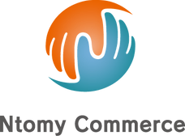

ホーム
概要
私たち
パートナー実績
お問い合わせ
Ntomy
Commerce
日本と海外の架け橋
事業内容
Ntomy Commerceは日本にまだ日の目を浴びていない画期的な製品や実用的でユニークな製品を海外から見つけ、日本に住む皆様の人生の質を向上させることに努めております。 世界に存在する革新的な商品を日本に住む皆様に提案し、関わって頂く方全ての人があなた(この商品)に出会えてよかったと思っていただける様に事業を行なっていきます。
クラウドファンディングの活用
日本は近年クラウドファンディングが日を追うごとに注目されています。 日本でまだ発売されていない商品を海外から仕入れ、多くの人に知って頂くと共に実績と製品のブランド価値を高めていきます。 クラウドファンディングでご支援頂くとどこよりも早く、特別な価格でワクワクする製品をご提供いたします。
販売チャネルと広告
量販店への卸販売、日本のメーカーとの連携やAmazon JapanなどのEコマースサイトでのオンライン販売などできるだけ多くの人に届けられる販売チャネルを開拓していきます。 ターゲットオーディエンスに一致する広告を選択し、それらを効果的に管理するために私たちの経験を使用します。 クラウドファンディングプラットフォーム広告等の公告、 SNS広告（Facebook、Instagram、Youtube、Twitter等）、 リスティング広告、プレスリリースを掲載しています。
メンバー紹介
代表
Doyo Naguchi
Ntomy Commerce 代表 2015年〜大手一部上場企業の勤務にて仕事の仕組み化や効率化を学ぶ 2018年〜電気通信事業にて100名以上の仲間と事業を始める 2020年〜コンサルティングとして本も出版されている大竹氏に感銘を受け、貿易化デビュー
コンサルティング・パートナー
Hideaki Otake
一般社団法人まじめに輸入ビジネスを研究する会 代表理事 YUBIKEN General Incorporated Association. Makuake、CAMPFIRE、GREENFUNDING 公式パートナー
コンサルティング・パートナー
Kazuma Hayashi
株式会社ＳＡＡＴＳ＆株式会社ＥＬＩＴＥＲＳ 代表取締役社長 2008年よりeBayとAmazonのマーチャント向けソリューションを提供している株式会社SAATSの創業者兼CEO。 クラウドファンディングマーケティングからスタートし、B2C、B2Bの営業活動を行うことで、海外メーカーの日本進出を支援する株式会社エリターズの創業者兼CEO。 メーカーとの契約条件の交渉役として、250件以上のクラウドファンディングプロジェクトの立ち上げをサポート。